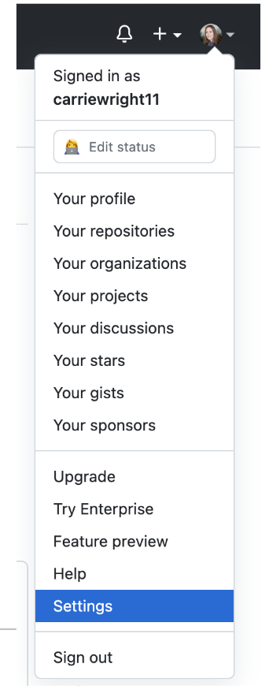
Setup
Getting started
Create your repository by clicking on the Use this Template button at OTTR_Template_Website repository
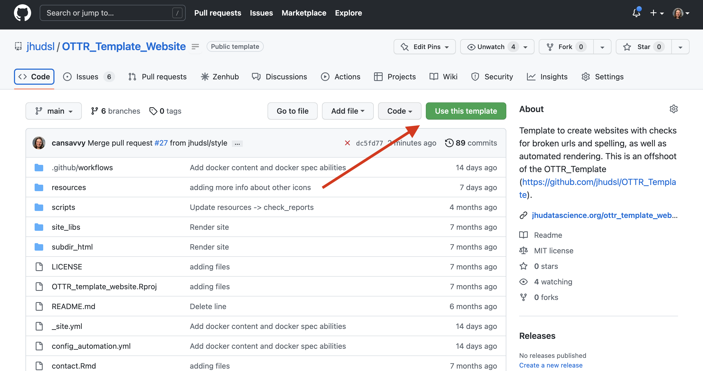
You’ll need to make your repository public.
Set your GH_PAT
To enable the GitHub actions, your repository needs to be setup in a specific way.
For OTTR GitHub actions to run, they need to have credentials through a personal access token.
- Set up your own personal access token following these instructions - but create a classic token. Keep this personal access token handy for the next step. When you get to the permissions page, check the box that says
repoand select all that is underneath that header. No other permissions are necessary.
Click here for more detailed instructions. The instructions for this step may change with updates to GitHub.
First, go to your username settings, by clicking on your user icon (upper right corner) and scrolling down to settings.
Next, scroll all the way down on the far right menu to “Developer Settings”.
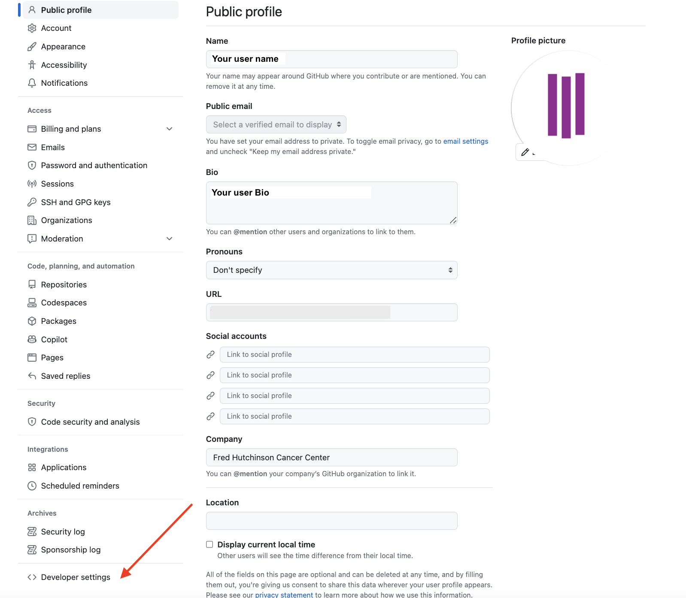
Then select “Personal Access Tokens” and “Tokens (classic)”
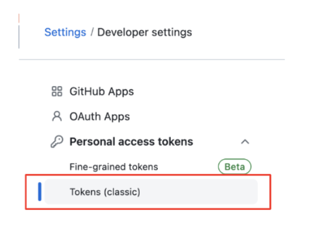
Then click “Generate new token” and confirm that you want classic.
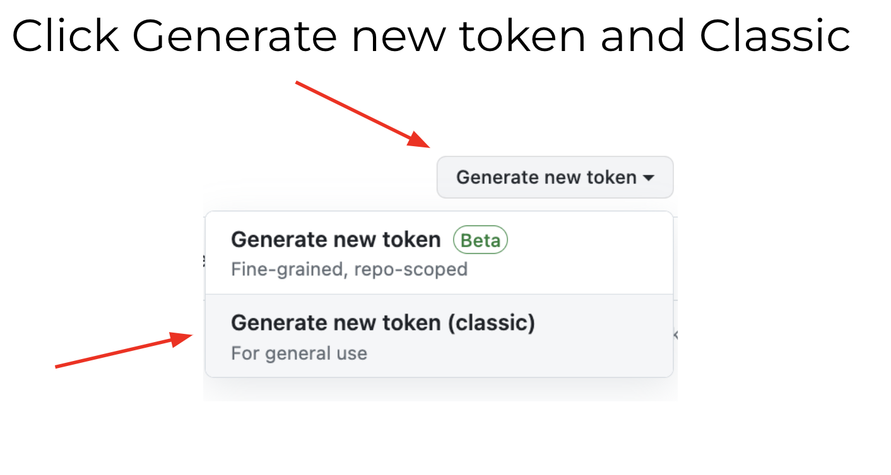
Finally, add a name select all the repo scopes and scroll down to the green button to generate the token. Copy this somewhere safe to then paste into your repository settings.
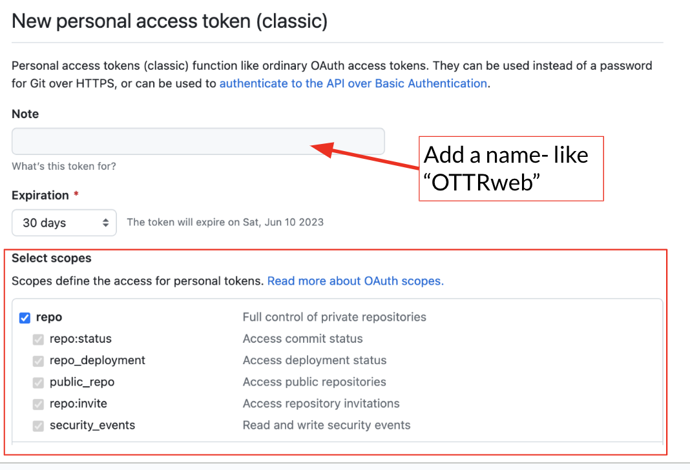
- In your new OTTR_Template_Website derived repository, go to Settings > Secrets and variables > Actions. Click
New Repository Secret.
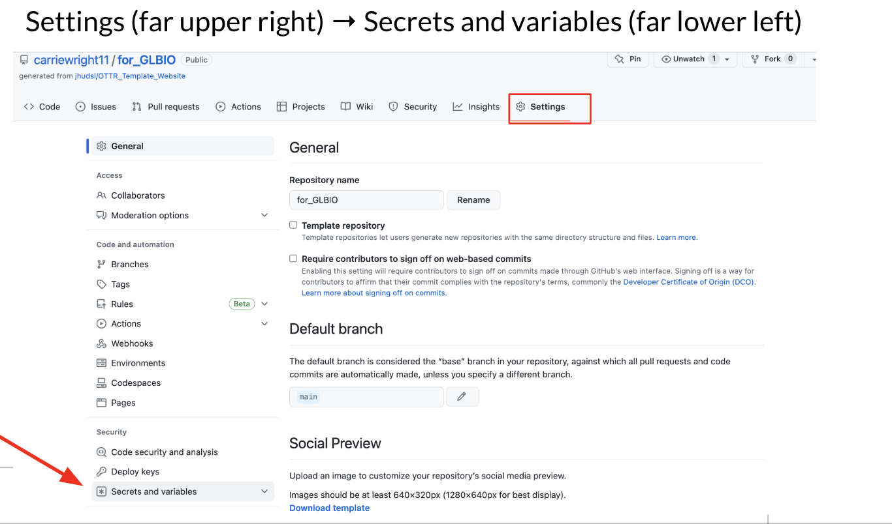
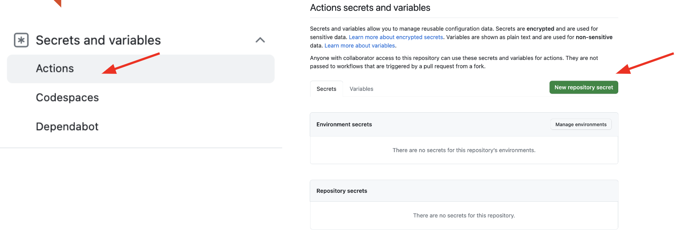
In the window opened, name this new secret GH_PAT and paste the personal access token in the box below. (Note that the name GH_PAT is specific to how OTTR works and other secret names cannot be used and for OTTR to still work).
Click the green button to add the secret.
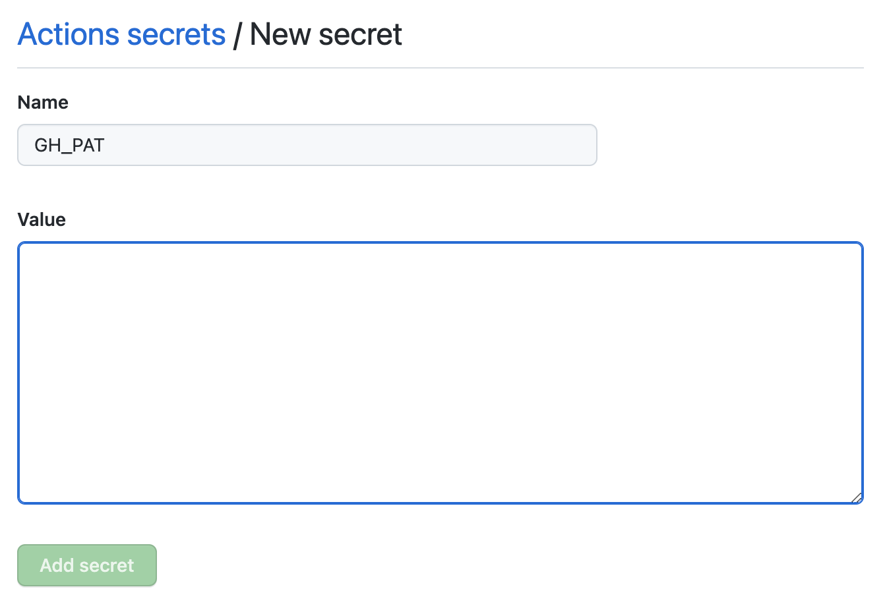
Allow GitHub Actions
Go to the settings menu for your repository that you created from the template. This should be located at the top of GitHub on the right side.
Scroll down to the “Actions” button and click it, then click “General”.
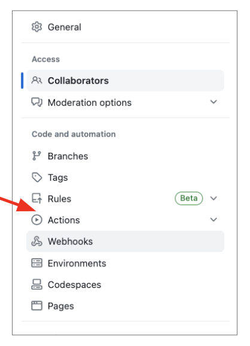
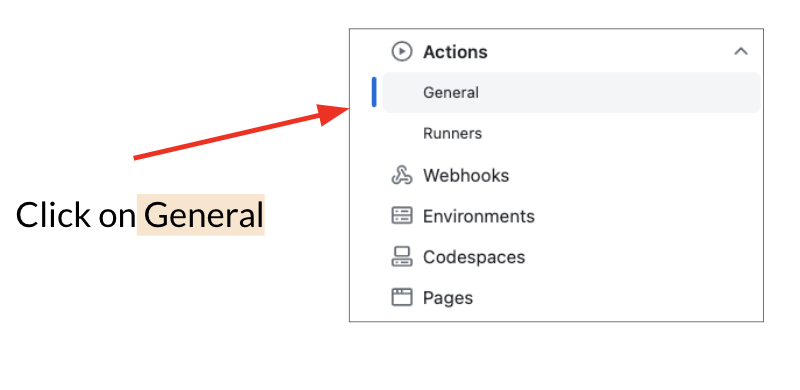
Scroll down to the workflow permissions section and select “Read and write permissions”, then click “Allow GitHub actions to create and approve pull requests.
Finally, click “save”.
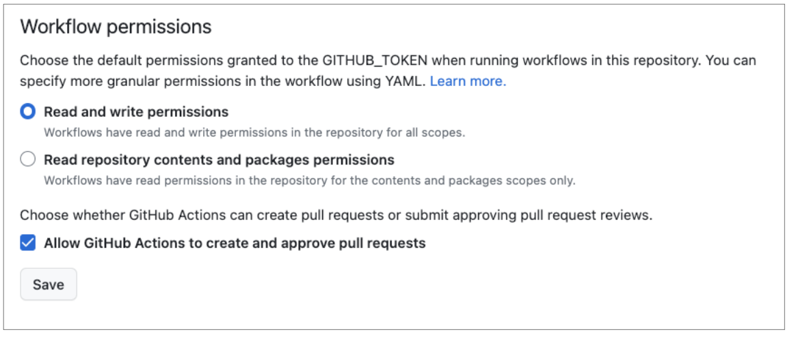
Protect branches
Although this isn’t entirely required, its strongly recommended that you use these settings to protect your main branches.
Click on settings in the far upper right corner:
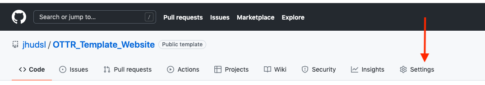
Click on branches:
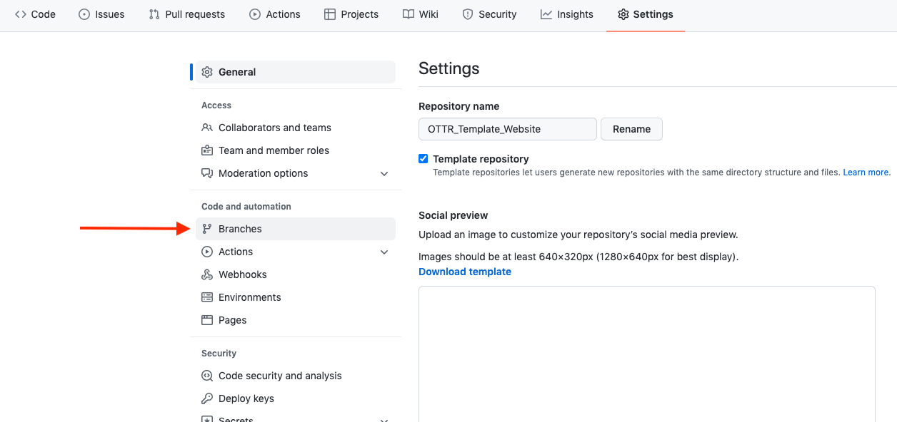
Click the add rule button.
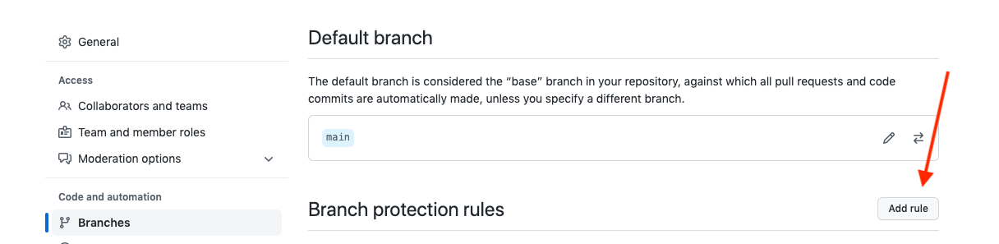
Type “main” as the branch name pattern:
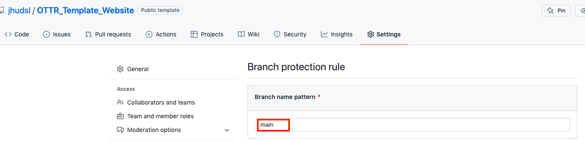
Click on the following boxes to require pull requests before merging:
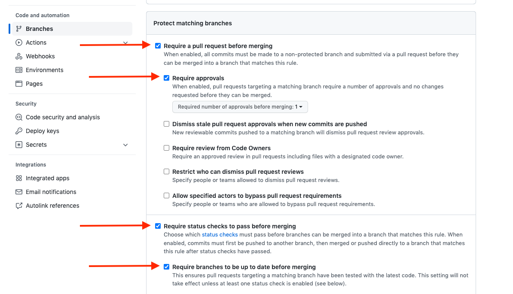
Note that if you have admin privileges on this repository, you will likely still be able to override these branch protections so use caution when git pushing!